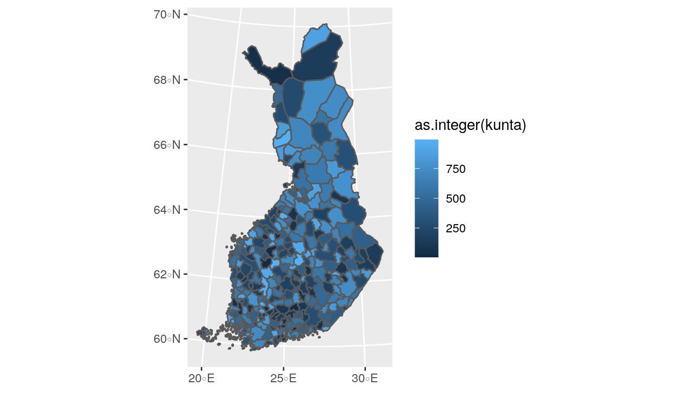
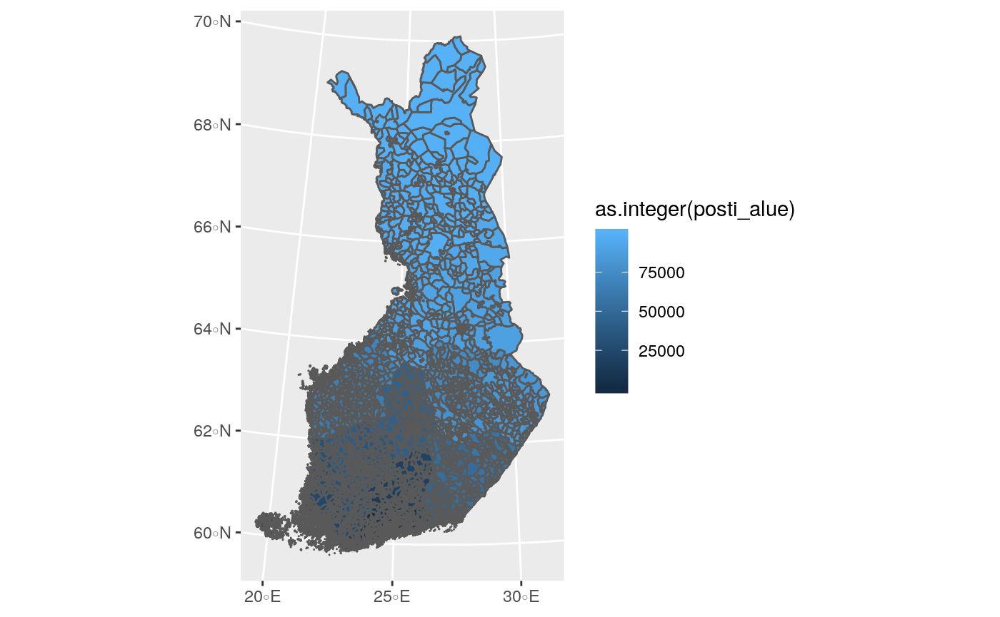
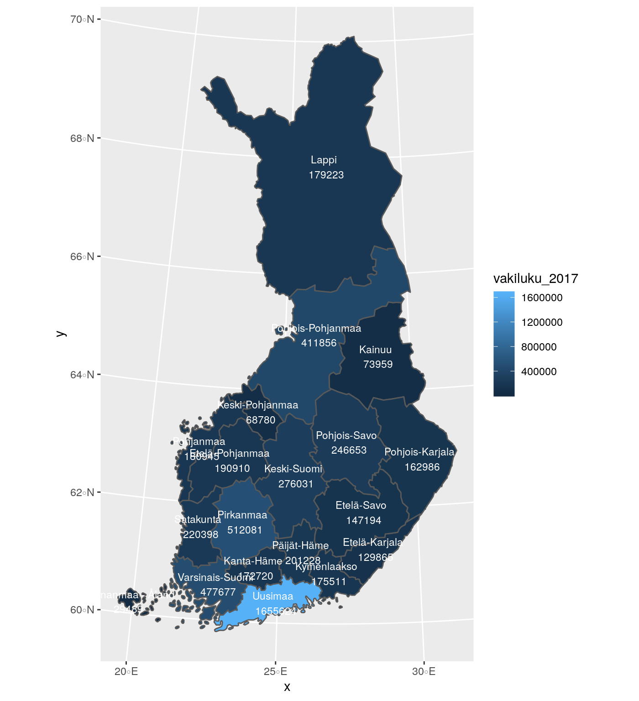
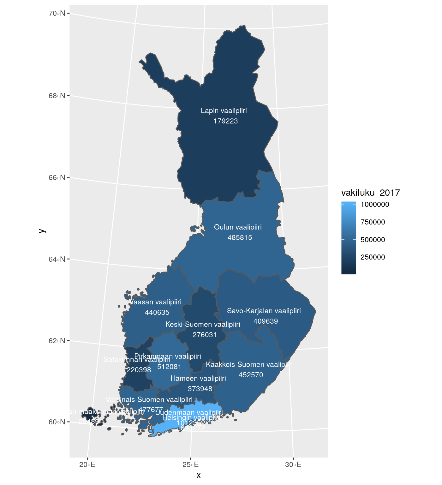
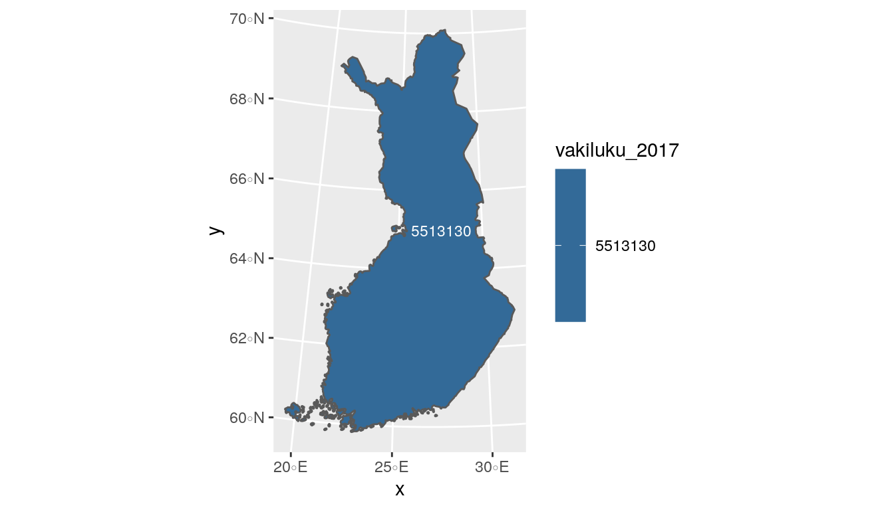
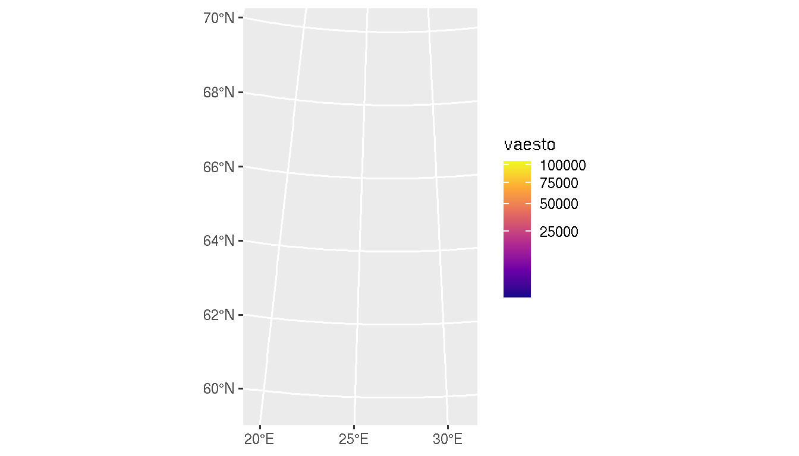
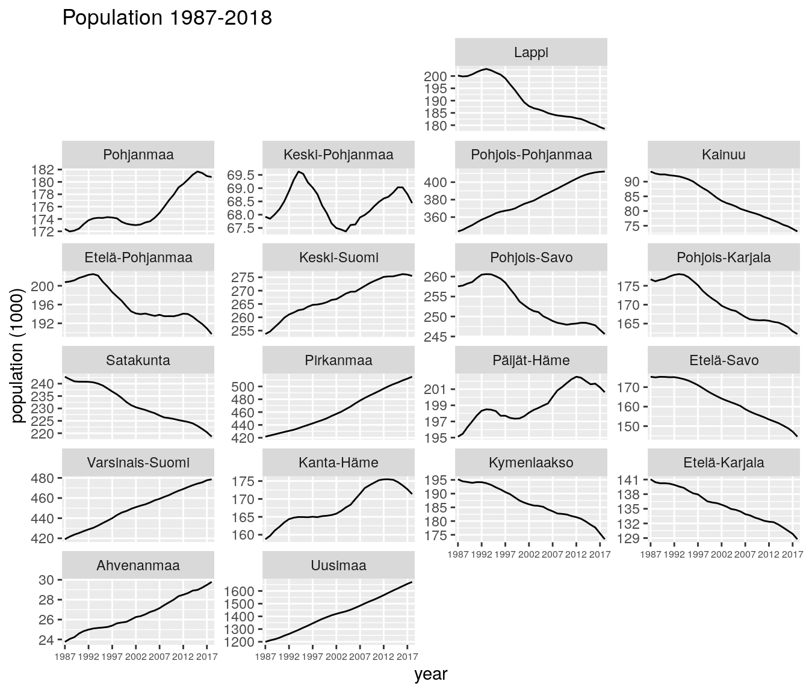
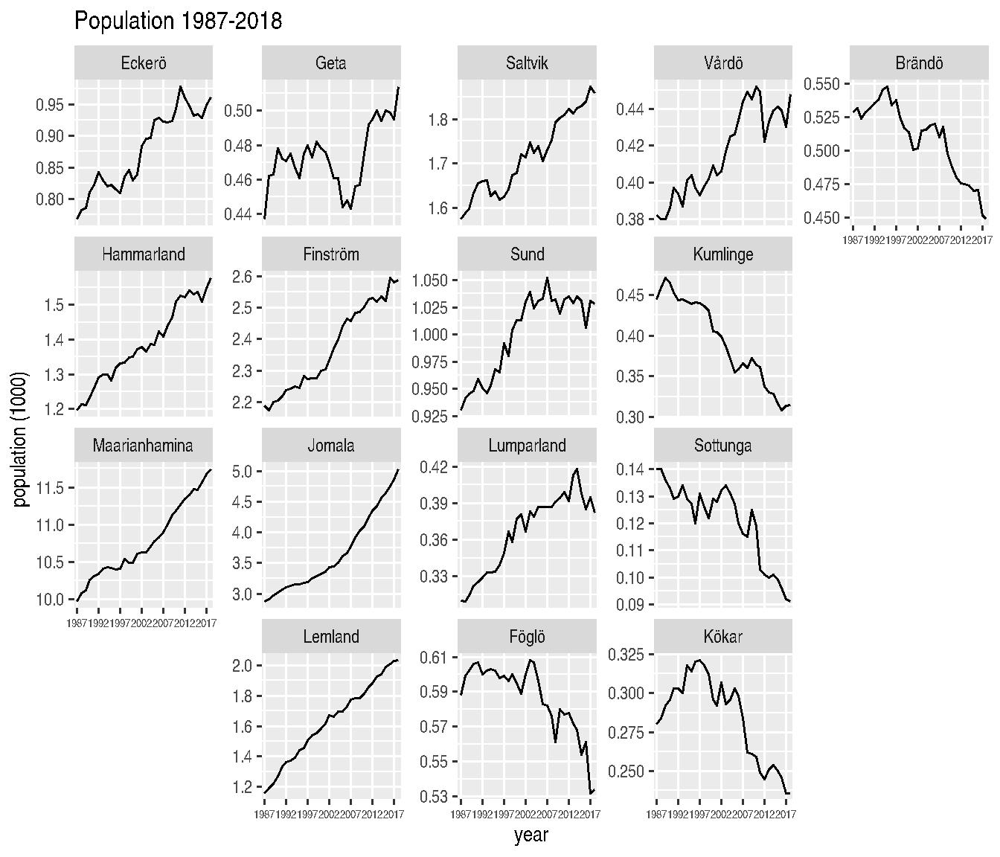

Installation
geofi is not yet in CRAN, but can be installed from Github using
remotes::install_github("ropengov/geofi")
Municipalities
library(geofi) #> #> geofi R package: tools for open GIS data for Finland. #> Part of rOpenGov <ropengov.github.io>. library(ggplot2) library(dplyr) #> #> Attaching package: 'dplyr' #> The following objects are masked from 'package:stats': #> #> filter, lag #> The following objects are masked from 'package:base': #> #> intersect, setdiff, setequal, union library(janitor) #> #> Attaching package: 'janitor' #> The following objects are masked from 'package:stats': #> #> chisq.test, fisher.test library(tidyr) municipalities <- get_municipalities(year = 2020, scale = 4500) #> Requesting response from: http://geo.stat.fi/geoserver/wfs?service=WFS&version=1.0.0&request=getFeature&typename=tilastointialueet%3Akunta4500k_2020 #> Data is licensed under: Attribution 4.0 International (CC BY 4.0) ggplot(municipalities) + geom_sf(aes(fill = as.integer(kunta)))

Zipcodes
zipcodes <- get_zipcodes(year = 2020) #> Requesting response from: http://geo.stat.fi/geoserver/wfs?service=WFS&version=1.0.0&request=getFeature&typename=postialue%3Apno_2020 #> Data is licensed under: Attribution 4.0 International (CC BY 4.0) ggplot(zipcodes) + geom_sf(aes(fill = as.integer(posti_alue)))

You can add variables from Paavo data (Statistics Finland) in following manner.
library(pxweb) #> pxweb: R tools for PX-WEB API. #> Copyright (C) 2014-2018 Mans Magnusson, Leo Lahti et al. #> https://github.com/ropengov/pxweb # lets get all zipcodes and all variables pxweb_query_list <- list("Postinumeroalue"=c("*"), "Tiedot"=c("*")) # Download data px_data <- pxweb_get(url = "http://pxnet2.stat.fi/PXWeb/api/v1/fi/Postinumeroalueittainen_avoin_tieto/2019/paavo_1_he_2019.px", query = pxweb_query_list) # Convert to data.frame tk_data_zip <- as.data.frame(px_data, column.name.type = "text", variable.value.type = "text") library(dplyr) library(tidyr) tk_data_zip2 <- tk_data_zip %>% as_tibble() %>% setNames(c("region","indicator","value")) %>% spread(indicator, value) tk_zipdata <- janitor::clean_names(tk_data_zip2) tk_zipdata$zipcode <- substr(x = tk_zipdata$region, start = 1, stop = 5) tk_zipdata$zipname <- gsub("^.{6}", "", tk_zipdata$region) # Lets join with spatial data and plot the area of each zipcode zipcodes19 <- get_zipcodes(year = 2019) #> Requesting response from: http://geo.stat.fi/geoserver/wfs?service=WFS&version=1.0.0&request=getFeature&typename=postialue%3Apno_2019 #> Data is licensed under: Attribution 4.0 International (CC BY 4.0) zipcodes_new <- left_join(zipcodes19, tk_zipdata, by = c("posti_alue" = "zipcode")) ggplot(zipcodes_new) + geom_sf(aes(fill = pinta_ala), color = alpha("white", 1/3))

Joining municipality level data from Statistics Finland
municipalities17 <- get_municipalities(year = 2017) #> Requesting response from: http://geo.stat.fi/geoserver/wfs?service=WFS&version=1.0.0&request=getFeature&typename=tilastointialueet%3Akunta4500k_2017 #> Data is licensed under: Attribution 4.0 International (CC BY 4.0) # pull municipality data from Statistics Finland library(pxweb) pxweb_query_list <- list("Alue 2019"=c("*"), "Tiedot"=c("M408","M411","M476","M391","M421","M478","M404","M410","M303","M297","M302","M44","M62","M70","M488","M486","M137","M140","M130","M162","M78","M485","M152","M72","M84","M106","M151","M499","M496","M495","M497","M498"), "Vuosi"=c("2017")) px_data <- pxweb_get(url = "http://pxnet2.stat.fi/PXWeb/api/v1/fi/Kuntien_avainluvut/2019/kuntien_avainluvut_2019_aikasarja.px", query = pxweb_query_list) # Convert to data.frame tk_data <- as.data.frame(px_data, column.name.type = "text", variable.value.type = "text") tk_data2 <- tk_data %>% rename(name = `Alue 2019`) %>% mutate(name = as.character(name), # Paste Tiedot and Vuosi Tiedot = paste(Tiedot, Vuosi)) %>% select(-Vuosi) %>% spread(Tiedot, `Kuntien avainluvut`) %>% as_tibble() tk_data3 <- janitor::clean_names(tk_data2) # Join with Statistics Finland attribute data dat <- left_join(municipalities17, tk_data3) #> Joining, by = "name" dat[1:10,1:10] #> Simple feature collection with 10 features and 10 fields #> geometry type: MULTIPOLYGON #> dimension: XY #> bbox: xmin: 83747.59 ymin: 6690809 xmax: 610975.5 ymax: 7133254 #> CRS: EPSG:3067 #> gml_id vuosi kunta nimi namn name #> 1 kunta4500k_2017.1 2017 5 Alajärvi Alajärvi Alajärvi #> 2 kunta4500k_2017.2 2017 9 Alavieska Alavieska Alavieska #> 3 kunta4500k_2017.3 2017 10 Alavus Alavus Alavus #> 4 kunta4500k_2017.4 2017 16 Asikkala Asikkala Asikkala #> 5 kunta4500k_2017.5 2017 18 Askola Askola Askola #> 6 kunta4500k_2017.6 2017 19 Aura Aura Aura #> 7 kunta4500k_2017.7 2017 20 Akaa Akaa Akaa #> 8 kunta4500k_2017.8 2017 35 Brändö Brändö Brändö #> 9 kunta4500k_2017.9 2017 43 Eckerö Eckerö Eckerö #> 10 kunta4500k_2017.10 2017 46 Enonkoski Enonkoski Enonkoski #> municipality_name_fi municipality_name_sv municipality_name_en #> 1 Alajärvi Alajärvi Alajärvi #> 2 Alavieska Alavieska Alavieska #> 3 Alavus Alavus Alavus #> 4 Asikkala Asikkala Asikkala #> 5 Askola Askola Askola #> 6 Aura Aura Aura #> 7 Akaa Akaa Akaa #> 8 Brändö Brändö Brändö #> 9 Eckerö Eckerö Eckerö #> 10 Enonkoski Enonkoski Enonkoski #> kuntaryhmitys_code geom #> 1 2 MULTIPOLYGON (((348733.2 69... #> 2 3 MULTIPOLYGON (((370424.7 71... #> 3 3 MULTIPOLYGON (((317245.3 69... #> 4 2 MULTIPOLYGON (((434407.9 67... #> 5 3 MULTIPOLYGON (((423421.8 67... #> 6 3 MULTIPOLYGON (((255415.5 67... #> 7 2 MULTIPOLYGON (((324952.6 67... #> 8 3 MULTIPOLYGON (((176037.2 67... #> 9 3 MULTIPOLYGON (((86806.42 66... #> 10 3 MULTIPOLYGON (((598384.5 68...
Aggregating municipality level data using internal municipality_key-files
# Lets aggregate at maakunta level using column mk_name mk_data <- dat %>% group_by(maakunta_name_fi,maakunta_code) %>% # And compute population at maakunta level summarise(vakiluku_2017 = sum(vakiluku_2017)) #> `summarise()` regrouping output by 'maakunta_name_fi' (override with `.groups` argument) ggplot(mk_data) + geom_sf(aes(fill = vakiluku_2017)) + geom_sf_text(aes(label = paste(maakunta_name_fi, "\n", vakiluku_2017)), size = 3, color = "white")

Or if you prefer aggregating at seutukunta-level you can
mk_data <- dat %>% group_by(seutukunta_code,seutukunta_name_fi) %>% # And compute population at maakunta level summarise(vakiluku_2017 = sum(vakiluku_2017)) #> `summarise()` regrouping output by 'seutukunta_code' (override with `.groups` argument) ggplot(mk_data) + geom_sf(aes(fill = vakiluku_2017)) + geom_sf_text(aes(label = paste(seutukunta_name_fi, "\n",vakiluku_2017)), size = 3, color = "white")

Or if you want the population at the national level aggregated up from municipality level you can:
mk_data <- dat %>% summarise(vakiluku_2017 = sum(vakiluku_2017)) ggplot(mk_data) + geom_sf(aes(fill = vakiluku_2017)) + geom_sf_text(aes(label = vakiluku_2017), size = 3, color = "white")

Interactive maps using leaflet-package
library(leaflet) library(geofi) library(dplyr) municipalities <- get_municipalities(year = 2019) #> Requesting response from: http://geo.stat.fi/geoserver/wfs?service=WFS&version=1.0.0&request=getFeature&typename=tilastointialueet%3Akunta4500k_2019 #> Data is licensed under: Attribution 4.0 International (CC BY 4.0) municipalities_lonlat <- sf::st_transform(x = municipalities, crs = "+proj=longlat +datum=WGS84") leaflet(municipalities_lonlat) %>% addTiles() %>% addPolygons(color = "coral", weight = 1, smoothFactor = 0.5, opacity = 1.0, fillOpacity = 0.5, label = ~nimi, highlightOptions = highlightOptions(color = "white", weight = 2, bringToFront = TRUE))
Population grid data
Whole country at 5km by 5km
pop_grid <- get_population_grid(year = 2018, resolution = 5) #> Requesting response from: http://geo.stat.fi/geoserver/wfs?service=WFS&version=1.0.0&request=getFeature&typename=vaestoruutu%3Avaki2018_5km #> Data is licensed under: Attribution 4.0 International (CC BY 4.0) ggplot(pop_grid) + geom_sf(aes(fill = vaesto), color = NA) + scale_fill_viridis_c(trans = "sqrt", option = "plasma")

Helsinki at 1km by 1km as interactive leaflet map
pop_grid <- get_population_grid(year = 2018, resolution = 1) #> Requesting response from: http://geo.stat.fi/geoserver/wfs?service=WFS&version=1.0.0&request=getFeature&typename=vaestoruutu%3Avaki2018_1km #> Data is licensed under: Attribution 4.0 International (CC BY 4.0) pop_grid_helsinki <- sf::st_transform(x = pop_grid %>% filter(kunta == "091"), crs = "+proj=longlat +datum=WGS84") leaflet(pop_grid_helsinki) %>% addTiles() %>% addPolygons(fillColor = ~colorQuantile("RdYlGn", vaesto)(vaesto), color = "coral", weight = 1, smoothFactor = 0.5, opacity = 1.0, fillOpacity = 0.5, label = ~vaesto, highlightOptions = highlightOptions(color = "white", weight = 2, bringToFront = TRUE))
Using custom geofacet grids
From Ryan Hafen’s blog:
The geofacet package extends ggplot2 in a way that makes it easy to create geographically faceted visualizations in R. To geofacet is to take data representing different geographic entities and apply a visualization method to the data for each entity, with the resulting set of visualizations being laid out in a grid that mimics the original geographic topology as closely as possible.
geofi-package contains custom grids to be used with various Finnish administrative breakdowns. Below is an example where population data at municipality level is pulled from Statistics Finland fom 1987 to 2018, then aggregated at the levels of regions (maakunta) and then plotted with ggplot2 using grid geofi::grid_mk_2019.
# Let pull population data from Statistics Finland pxweb_query_list <- list("Alue 2019"=c("*"), "Tiedot"=c("M411"), "Vuosi"=c("1987","1988","1989","1990","1991","1992","1993","1994","1995","1996","1997","1998","1999","2000","2001","2002","2003","2004","2005","2006","2007","2008","2009","2010","2011","2012","2013","2014","2015","2016","2017","2018")) # Download data px_data <- pxweb_get(url = "http://pxnet2.stat.fi/PXWeb/api/v1/fi/Kuntien_avainluvut/2019/kuntien_avainluvut_2019_aikasarja.px", query = pxweb_query_list) # Convert to data.frame px_data <- as.data.frame(px_data, column.name.type = "text", variable.value.type = "text") names(px_data) <- c("kunta_name","var","year","value") # lets aggregate population data dat <- left_join(geofi::municipality_key_2019 %>% select(-year), px_data) %>% group_by(maakunta_code, maakunta_name_fi,year) %>% summarise(population = sum(value, na.rm = TRUE)) %>% na.omit() %>% ungroup() %>% rename(code = maakunta_code, name = maakunta_name_fi) #> Joining, by = "kunta_name" #> `summarise()` regrouping output by 'maakunta_code', 'maakunta_name_fi' (override with `.groups` argument) library(geofacet) library(ggplot2) ggplot(dat, aes(x = year, y = population/1000, group = name)) + geom_line() + facet_geo(facets = ~name, grid = grid_maakunta_2019, scales = "free_y") + theme(axis.text.x = element_text(size = 6)) + scale_x_discrete(breaks = seq.int(from = 1987, to = 2018, by = 5)) + labs(title = "Population 1987-2018", y = "population (1000)") #> Note: You provided a user-specified grid. If this is a generally-useful #> grid, please consider submitting it to become a part of the geofacet #> package. You can do this easily by calling: #> grid_submit(__grid_df_name__)

dat <- left_join(geofi::municipality_key_2019 %>% filter(maakunta_name_fi == "Ahvenanmaa") %>% select(-year), px_data) %>% group_by(maakunta_code, maakunta_name_fi,year) %>% rename(code = kunta, name = kunta_name, population = value) #> Joining, by = "kunta_name" library(geofacet) library(ggplot2) ggplot(dat, aes(x = year, y = population/1000, group = name)) + geom_line() + facet_geo(facets = ~name, grid = grid_ahvenanmaa_2019, scales = "free_y") + theme(axis.text.x = element_text(size = 6)) + scale_x_discrete(breaks = seq.int(from = 1987, to = 2018, by = 5)) + labs(title = "Population 1987-2018", y = "population (1000)") #> Note: You provided a user-specified grid. If this is a generally-useful #> grid, please consider submitting it to become a part of the geofacet #> package. You can do this easily by calling: #> grid_submit(__grid_df_name__)
